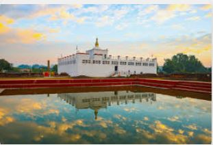

HISTORICAL
PEACEFUL E-Library for the
NEPAL Nepali Students
E-LIBRARY
HISTORICAL
PEACEFUL
E-Library for the
NEPAL Nepali Students
E-LIBRARY
⚲
Home
Historical Thinking
Browse History
About


Considered as the birthplace of Siddhartha, who later became Lord Buddha, Lumbini draws hundreds of Buddhist pilgrims daily. In the year 250 BC, the legendary emperor Ashoka erected a stone pillar here marking the birthplace of Buddha. Maya Devi, the mother of Buddha, gave birth to the Lord near a tree in the centre of the garden, which now houses a temple dedicated to her. Lumbini is around 300 km away from the capital city and makes for a great weekend getaway from Kathmandu. A UNESCO world cultural heritage site, Lumbini is more than just a religious place.